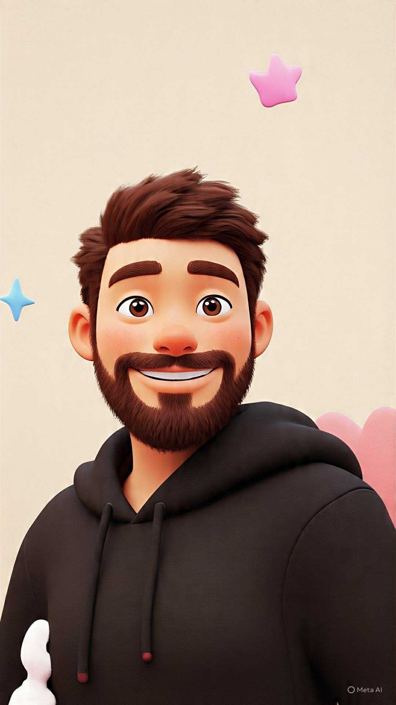

Media Design & ICT Student
From Damascus to Eindhoven — a journey of growth, discovery, and design.
Syria
2000 - 2002
Where my story began, building my roots, identity, and curiosity.
Starting pointSaudi Arabia
2002 - 2016
A multicultural city where I learned adaptability and diversity.
+1,320 kmFrance
2016 - 2019
High school years where I became more independent and creative.
+4,200 kmNetherlands
2019 - Present
Studying Media Design & ICT and building projects with purpose.
+380 kmA selection of projects where I explored design, interaction, and problem-solving.
UNO-style icebreaker game
A playful card game helping young adults start deeper conversations in a low-pressure way.
Play Desktop Version → Play Mobile Version →Three app concepts
Three mobile app concepts focused on accessibility, support, sustainability, and simple navigation.
View on Drieam →Speed-meet Q&A game
A speed-meet experience that helps people connect through timed questions and playful interaction.
Watch Demo →Smart recycling system
A smart disassembly concept for improving recycling, sorting, and circular material recovery.
View on Drieam →Have a project idea? I’d love to hear from you.